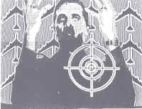

Terry Wright
The Perfect Leader
Election Night, 1994
is always you and you and you because
who else can you blame or champion
when the kids go underground for a rave
and murdering one's own parents brings more fame
and a docudrama? Macbeth stresses stable
family values and a path to grab
more goodies in the will. A cult
starts to look cute after being bludgeoned
with negative clips and talk radio
gab. "Death by ad hominem" you
demand chomping on the leftover crumbs
of your own spine. Who slept with whom?
swings votes as you pop in a tape
to slo-mo the stings and phone calls
as if splashing a mean bumpersticker
on your car's ass or ringing up Limbaugh
to rant your precious opinion promotes
citizenship. The fact is Goebbels got
you by the balls and he will make bail
before the demagogue you voted in
is booted out by term limits but hey
you had you say
you cut taxes for roads and for bridges
you mushroomed the military budget
you bombed out slacker welfare moms
you strangled funding for the arts
you saluted flags at every photo opportunity
you bellyached about the pork and snacked on PACs
you pulled the in-a-coma health care plug
you built more drug war prisons than schools
you cared about veto over virtue
you never lied you "just misled"
you put a contract out on character
you twice elected that scorched earth actor
you spin doctored you squandered you pandered
you pitched to greed while preaching decency
you made millions and bought a Senate seat
you only got the government you say you want
|

*Based on a still image from Perfect Leader (1983), a
computer-video work by Max Almy, from Collage: Critical Views,
edited by Katherine Hoffman, UMI Research Press, 1989. "I never lied. I
just misled." was a statement made by Oliver North to a congressional
committee investigating the Iran-Contra scandal. |
{kind=link}